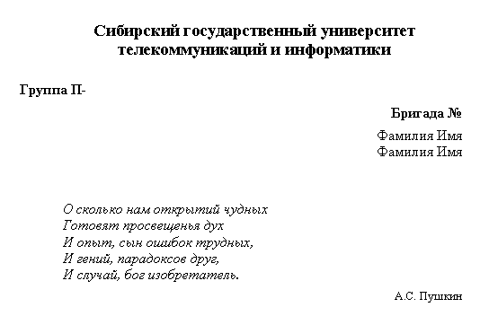
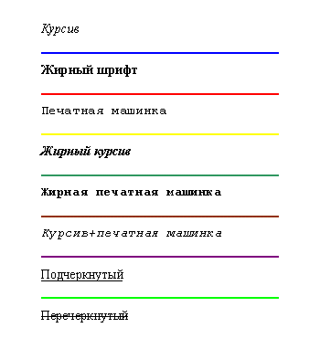

Лабораторные задания по курсу "Введение в Интернет"
Записать к себе в директорию шаблон html-файла.
Для этого щелкнуть мышкой
по данной гиперссылке: шаблон html-файла.
Затем, в открывшемся окне браузера войти в пункт меню
Задать имя файла (и путь к нему) и выбрать
"Тип файла: Веб-страница, только HTML".
Аналогичного результата можно добиться, если
в открывшемся окне браузера
щелкнуть правой кнопкой мышки
в любом месте (кроме меню!), а затем выбрать "Просмотр в виде HTML".
В этом случае html-файл откроется в Блокноте.
Для того, чтобы сохранить этот файл, необходимо
войти в пункт меню Блокнота
Используя шаблон html-файла cоздать документ, в котором в заголовке окна браузера должна быть надпись "Лабораторная 1",а на экране текст указанного вида.
1-я часть задания
Название университета оформить как заголовок, а все остальное - как текст, расположенный
слева или справа на экране. Обратить внимание на использование жирного шрифта.
Отрывок из стихотворения расположить со сдвигом вправо, шрифт - курсив, а подпись - справа и меньшим размером шрифта, причем инициалы отделить от фамилии неразрывным пробелом.
Это должно выглядеть так:

2-я часть задания - текст следующего вида, где каждая строка имеет начертание, соответствующее тому, что написано. Между собой строки разделены горизонтальными линиями разного цвета.
Это должно выглядеть так:
